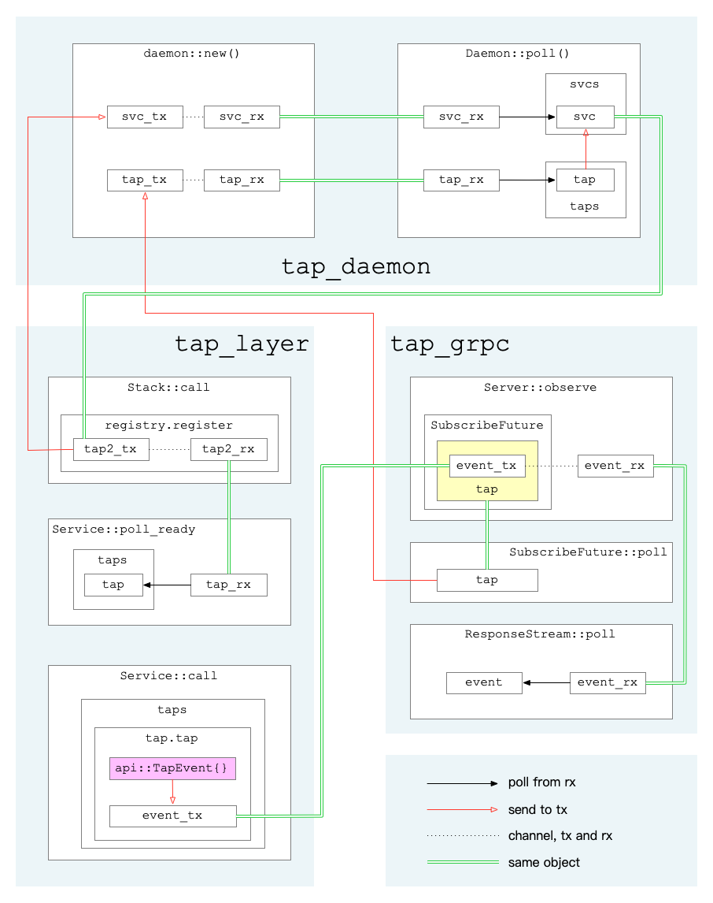

概述 Linkerd2由控制平面和数据平面组成：
控制平面是在一个专门的Kubernetes命名空间（默认是linkerd）中运行的一组服务，这些服务共同实现了聚合遥测数据、提供一组面向用户的API、向数据平面提供控制指令等功能。
数据平面由一组用Rust编写的轻量级代理组成，它们安装在服务的每个pod中。它通过initContainer配置iptables来接管Pod的所有出入流量。它对服务毫无侵入，服务本身不需要修改任何代码，甚至可以将它添加到正在运行的服务中。
以下是官方的架构示意图：
tap是Linkerd2的一个非常有特色的功能，它可以随时抓取某资源的实时流量。有效的利用该功能可以非常方便的监控服务的请求流量情况，协助调试服务。
tap相关的功能组件如下：
web/CLI: 发起tap请求，展示tap监控结果
tap: 将来自web/CLI的tap请求转为gRPC请求并发至proxy组件，将proxy回复的tap事件回复给web/CLI
proxy: 处理tap请求，从经过的request/response数据中获取需要的信息，组成tap事件上报
前两者逻辑相对简单，此处主要关注proxy与tap组件交互相关的一些逻辑，简单分析proxy内部的运行逻辑。
注：本文基于Linkerd2 stable-2.6.0版本，linkerd-proxy v2.76.0版本。
初始化 首先是初始化，在build_proxy_task中：
1 let (tap_layer, tap_grpc, tap_daemon) = tap::new();
进入tap::new()：
1 2 3 4 let (daemon, register, subscribe) = daemon::new();let layer = Layer::new(register);let server = Server::new(subscribe);(layer, server, daemon)
此处创建了如下3个对象：
tap_layer 用于后续的 inbound 和 outbound 逻辑，及后续请求处理tap_grpc 用于 TapServer 创建，处理tap组件的grpc请求tap_daemon 则作为任务正常运行，负责黏合layer与grpc
下面分别介绍。
tap_daemon进入daemon::new()：
1 2 3 4 5 6 7 8 9 10 11 12 let (svc_tx, svc_rx) = mpsc::channel(super::REGISTER_CHANNEL_CAPACITY);let (tap_tx, tap_rx) = mpsc::channel(super::TAP_CAPACITY);let daemon = Daemon { svc_rx, svcs: Vec ::default(), tap_rx, taps: Vec ::default(), }; (daemon, Register(svc_tx), Subscribe(tap_tx))
注意此处分别创建svc通道和tap通道，并且将两通道的接收端都存于tap_daemon中，然后将svc的发送端定义为新类型Register的实例，将tap的发送端定义为新类型Subscribe的实例。
在主逻辑中，通过tokio框架执行daemon任务：
1 tokio::spawn(tap_daemon.map_err(|_| ()).in_current_span());
在Daemon::poll中（见linkerd2-proxy/linkerd/app/core/src/tap/daemon.rs:60，保留骨干）：
1 2 3 4 5 6 7 8 9 10 11 12 13 14 15 16 17 18 19 20 21 22 23 24 25 26 27 28 29 30 31 32 33 34 35 36 37 38 39 self .taps.retain(|t| t.can_tap_more());for idx in (0 ..self .svcs.len()).rev() { if self .svcs[idx].poll_ready().is_err() { self .svcs.swap_remove(idx); } } while let Ok (Async::Ready(Some (mut svc))) = self .svc_rx.poll() { for tap in &self .taps { let err = svc.try_send(tap.clone()).err(); } if !dropped { self .svcs.push(svc); } } while let Ok (Async::Ready(Some ((tap, ack)))) = self .tap_rx.poll() { for idx in (0 ..self .svcs.len()).rev() { let err = self .svcs[idx].try_send(tap.clone()).err(); if err.map(|e| e.is_disconnected()).unwrap_or(false ) { self .svcs.swap_remove(idx); } } self .taps.push(tap); let _ = ack.send(()); } Ok (Async::NotReady)
这段逻辑主要将grpc那边来的tap送到layer，从而将前面的layer和grpc部分的逻辑串了起来。
tap_layerlayer相关逻辑主要在初始化和后续实际处理请求那。其创建会用到刚才生成的Register的实例，并用于之后的Stack::call（见linkerd2-proxy/linkerd/app/core/src/tap/service.rs:96）中：
1 2 3 4 5 6 7 let inspect = target.clone();let inner = self .inner.call(target);let tap_rx = self .registry.register();MakeFuture { inner, next: Some ((tap_rx, inspect)), }
在registry.register()中（见linkerd2-proxy/linkerd/app/core/src/tap/daemon.rs:148）：
1 2 3 4 5 6 7 let (tx, rx) = mpsc::channel(super::TAP_CAPACITY);if let Err (_) = self .0 .try_send(tx) { debug!("failed to register service" ); } rx
在后续生成的Service中，首先看poll_ready（见linkerd2-proxy/linkerd/app/core/src/tap/service.rs:150）：
1 2 3 4 5 6 7 8 9 while let Ok (Async::Ready(Some (t))) = self .tap_rx.poll() { self .taps.push(t); } self .taps.retain(|t| t.can_tap_more());self .inner.poll_ready()
接着是call（见linkerd2-proxy/linkerd/app/core/src/tap/service.rs:161）：
1 2 3 4 5 6 7 8 9 10 11 12 13 14 15 16 17 18 19 20 21 22 23 24 let mut req_taps = Vec ::new();let mut rsp_taps = Vec ::new();for t in &mut self .taps { if let Some ((req_tap, rsp_tap)) = t.tap(&req, &self .inspect) { req_taps.push(req_tap); rsp_taps.push(rsp_tap); } } let req = req.map(move |inner| Payload { inner, taps: req_taps, }); let inner = self .inner.call(req);ResponseFuture { inner, taps: rsp_taps, }
在ResponseFuture::poll中（见linkerd2-proxy/linkerd/app/core/src/tap/service.rs:200）：
1 2 3 4 5 6 7 8 9 10 11 12 13 14 15 16 17 18 19 20 21 22 match self .inner.poll() { Ok (Async::NotReady) => Ok (Async::NotReady), Ok (Async::Ready(rsp)) => { let taps = self .taps.drain(..).map(|t| t.tap(&rsp)).collect(); let rsp = rsp.map(move |inner| { let mut body = Payload { inner, taps }; if body.is_end_stream() { body.eos(None ); } body }); Ok (Async::Ready(rsp)) } Err (e) => { for tap in self .taps.drain(..) { tap.fail(&e); } Err (e) } }
前面这些逻辑，其中出现了2个tap接口，一个是Tap::tap，一个是TapResponse::tap，这俩的核心作用都是从请求或回复数据中获取需要的tap信息，然后发往某个通道，细节下面再讲。
tap_grpctap_grpc由Server::new(subscribe)生成，实现了api::server::Tap这个grpc server，响应observe这个method请求。该请求来自Linkerd2的tap组件。
收到请求后：
解析请求参数：limit match extract
生成一个唯一idbase_id
创建一个用于传递api::TapEvent事件的通道，用其发送端events_tx构造一个Tap对象
调用subscribe.subscribe(tap)，得到一个SubscribeFuture任务
构造任务ResponseFuture
在任务ResponseFuture的poll中，会先执行SubscribeFuture::poll（见linkerd2-proxy/linkerd/app/core/src/tap/daemon.rs:178）：
1 2 3 4 5 6 7 8 9 10 11 12 13 14 15 16 17 18 19 20 21 22 23 24 25 26 loop { self .0 = match self .0 { FutState::Subscribe { ref mut tap, ref mut tap_tx, } => { try_ready!(tap_tx.poll_ready().map_err(|_| super::iface::NoCapacity)); let tap = tap.take().expect("tap must be set" ); let (tx, rx) = oneshot::channel(); tap_tx .try_send((tap, tx)) .map_err(|_| super::iface::NoCapacity)?; FutState::Pending(rx) } FutState::Pending(ref mut rx) => { return rx.poll().map_err(|_| super::iface::NoCapacity); } } }
SubscribeFuture::poll执行完毕，会接着构造一个ResponseStream流，并包装成grpc结果返回。
在ResponseStream::poll中（见linkerd2-proxy/linkerd/app/core/src/tap/grpc/server.rs:225）：
1 2 3 4 5 6 7 8 9 10 11 self .shared = self .shared.take().and_then(|shared| { if shared.is_under_limit() { Some (shared) } else { None } }); self .events_rx.poll().or_else(|_| Ok (None .into()))
由此看出，每个grpc请求会对应着一个Tap对象，往Tap.shard.events_tx中发送事件，则该事件会最终发到grpc请求方。
看Tap::tap（见linkerd2-proxy/linkerd/app/core/src/tap/grpc/server.rs:267）：
1 2 3 4 5 6 7 8 9 10 11 12 13 14 15 16 17 18 19 20 21 22 23 24 25 26 27 28 29 30 31 32 33 let shared = self .shared.upgrade()?;if !shared.match_.matches(req, inspect) { return None ; } let event = api::TapEvent { event: Some (api::tap_event::Event::Http(api::tap_event::Http { event: Some (api::tap_event::http::Event::RequestInit(init)), })), ..base_event.clone() }; let mut events_tx = shared.events_tx.clone();events_tx.try_send(event).ok()?; let tap = TapTx { id, tx: events_tx };let req = TapRequestPayload { tap: tap.clone(), base_event: base_event.clone(), }; let rsp = TapResponse { tap, base_event, request_init_at, extract_headers, }; Some ((req, rsp))
图示 
总结 至此，以上3个不同的角色互相合作，实现了：
Linkerd2的tap组件下发tap请求
proxy向所有流量请求中插入tap请求
抓取到tap数据后，上报至Linkerd2的tap组件